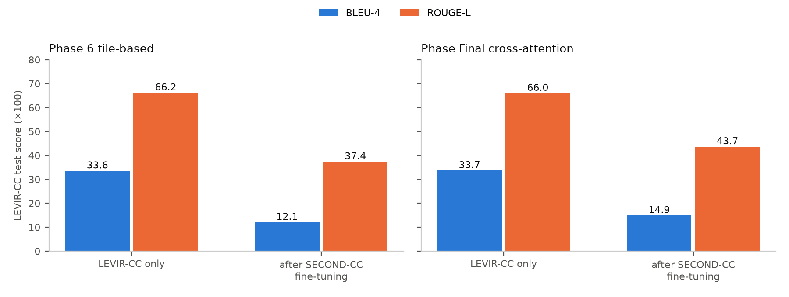

Figure 1. LEVIR-CC test scores for each architecture.
Figure 1. LEVIR-CC test scores for each architecture.Adapting LEVIR-CC-trained change captioning models toward Indian imagery
[Author names] · [Affiliation] · October 2026
This report covers the first phase of our work on remote sensing image change captioning (RSICC). We built a modular captioning pipeline on the LEVIR-CC benchmark and developed it through a series of architectures, with the aim of adapting it to Indian imagery. The adaptation did not succeed, which led to the construction of a dedicated Indian Sentinel-2 dataset; that work is described in a companion report.
We developed a modular RSICC pipeline on LEVIR-CC and improved it in stages: a CNN baseline, a frozen RemoteCLIP encoder with difference fusion, a hierarchical tile-based model, and a RemoteCLIP cross-attention model with contrastive caption alignment. On the LEVIR-CC test set, BLEU-4 rose from 30.3 to 33.7 and ROUGE-L from 62.1 to 66.0, with the gains flattening after the first architectural change. Extending the models to a second dataset (SECOND-CC) by sequential fine-tuning caused severe forgetting: LEVIR-CC BLEU-4 fell to 12–15. Later designs that coupled a RemoteCLIP encoder to a large language-model decoder (Qwen2-VL family) were implemented, but training diverged and no evaluation was completed. Finally, a pilot Indian Sentinel-2 dataset was collected and off-the-shelf vision-language captioners were tried on it; their captions were unusable, ranging from empty or garbled output to a blanket "nothing changed". We conclude that models trained on LEVIR-CC do not provide a viable route to change captioning of Indian imagery, and that a purpose-built, reliably labelled Indian dataset is required.
LEVIR-CC is the standard RSICC benchmark: about 10,000 bi-temporal image pairs (256×256 px, 0.5 m resolution) of urban and suburban areas in Texas, USA, each with five reference captions. It is dominated by building and road construction and contains no Indian landscapes, monsoon-driven seasonal change, or the medium-resolution imagery freely available across India.
Our goal in Phase 1 was to build a captioning model on LEVIR-CC, improve it, and then adapt it to Indian imagery. The phase had three parts:
All models were trained and evaluated in one modular codebase, so results are directly comparable:
forward(images, caption_tokens) → logits, so only the model definition changes between experiments.| Phase | Architecture | Trainable parameters |
|---|---|---|
| 1 | Two-stream CNN encoder with difference fusion + 2-layer Transformer decoder (baseline) | — |
| 2 | Frozen RemoteCLIP ViT-B/32 encoder, absolute-difference fusion, same decoder | 3.4 M of 154.7 M |
| 6 | Hierarchical tile-based model: tiles encoded by a shared RemoteCLIP backbone, bidirectional tile differences, tile-fusion Transformer | 13.8 M of 165.1 M |
| Final | RemoteCLIP with cross-attention fusion between dates + contrastive caption–image alignment | 9.1 M of 160.4 M |
Results (LEVIR-CC test set, 1,929 pairs):
| Phase | Test loss | BLEU-1 | BLEU-4 | METEOR | ROUGE-L | Sentence similarity |
|---|---|---|---|---|---|---|
| 1 Baseline | 0.969 | 47.2 | 30.3 | 59.7 | 62.1 | 64.8 |
| 2 RemoteCLIP difference | 0.935 | 51.7 | 32.8 | 63.0 | 65.5 | 70.6 |
| 6 Tile-based | 0.923 | 52.1 | 33.6 | 63.6 | 66.2 | 71.5 |
| Final Cross-attention | 0.898 | 53.1 | 33.7 | 63.9 | 66.0 | 71.2 |
Figure 1. LEVIR-CC test scores for each architecture.
Findings:
To move beyond LEVIR-CC, the Phase 6 and Final models were fine-tuned on SECOND-CC, a second change-captioning dataset with more varied land-cover changes, and then evaluated on both test sets.
| Model | LEVIR-CC BLEU-4 before → after | LEVIR-CC ROUGE-L before → after | SECOND-CC BLEU-4 | SECOND-CC ROUGE-L |
|---|---|---|---|---|
| Phase 6 Tile-based | 33.6 → 12.1 | 66.2 → 37.4 | 12.3 | 41.6 |
| Final Cross-attention | 33.7 → 14.9 | 66.0 → 43.7 | 13.0 | 43.3 |

Figure 2. LEVIR-CC test scores before and after sequential fine-tuning on SECOND-CC.Fine-tuning on the second dataset caused catastrophic forgetting: LEVIR-CC test loss rose from about 0.9 to 3.5–4.1 and BLEU-4 fell by more than half. Performance on SECOND-CC itself also remained low. A model adapted in this way loses what it learned on the source dataset without becoming good on the target.
The next designs replaced the small Transformer decoder with a pretrained language model, aiming at richer captions and domain adaptation:
Both designs were implemented. Training ran into numerical instability: the stage-2 loss diverged to NaN. The cause was traced to unbounded bridge outputs overflowing the half-precision language model, and a fix was applied, but no complete training and evaluation run was achieved, so no results are reported for these designs. They were also constrained by the available GPUs (11 GB Pascal/Turing cards without bfloat16 support), which forced aggressive quantisation, very small batches and strictly sequential jobs.
A pilot dataset was collected from Sentinel-2 imagery over hand-picked Indian areas of interest in five categories (urban, deforestation, agriculture, coastal, infrastructure). Each area was tiled into 512×512 patches, and before/after pairs several years apart were kept only if their change magnitude exceeded a threshold. Of 2,126 tiles checked, 1,072 pairs were kept (Figure 3).
 Figure 3. A sample pair from the pilot Indian Sentinel-2 collection.
Figure 3. A sample pair from the pilot Indian Sentinel-2 collection.
Because no Indian captions existed to fine-tune on, two pretrained captioners were run directly on a 30-pair sample:
 Figure 4. One Indian pair and the two captioners' answers. One describes broad urban growth, the other reports no change; neither describes the specific change visible on the right side of the scene.
Figure 4. One Indian pair and the two captioners' answers. One describes broad urban growth, the other reports no change; neither describes the specific change visible on the right side of the scene.
Neither model gave captions usable as training labels or as a deployed system.
Phase 1 established a modular, reproducible RSICC pipeline and showed that a remote-sensing-pretrained encoder is the most useful single improvement on LEVIR-CC, while further architectural complexity brought diminishing returns. Moving beyond LEVIR-CC failed at every step:
Together these results show that a model trained on LEVIR-CC is not a viable path to change captioning of Indian imagery. The missing ingredient is data: Indian bi-temporal imagery with reliable change labels. That conclusion motivated the dataset construction described in the companion report.